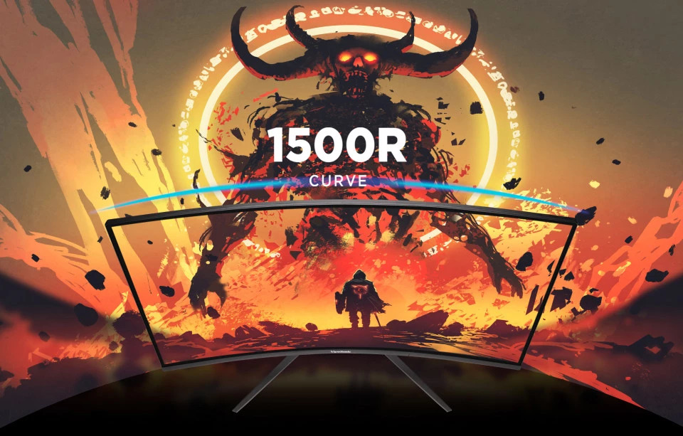
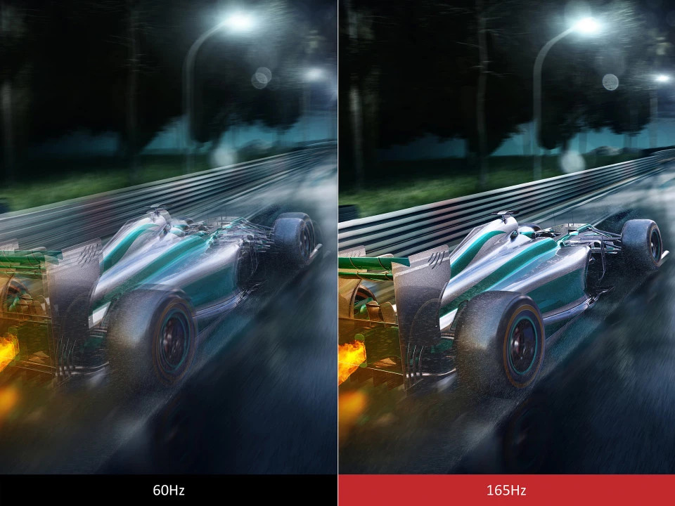
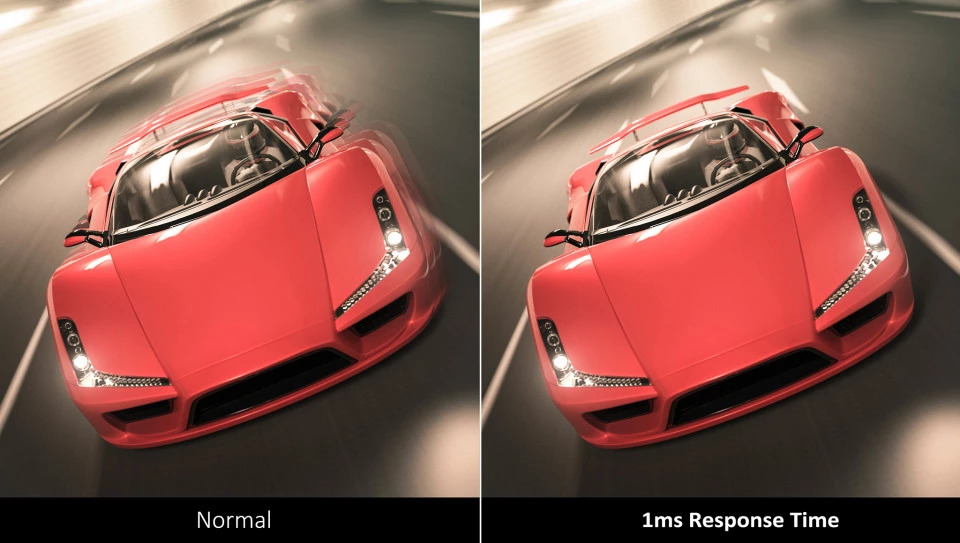
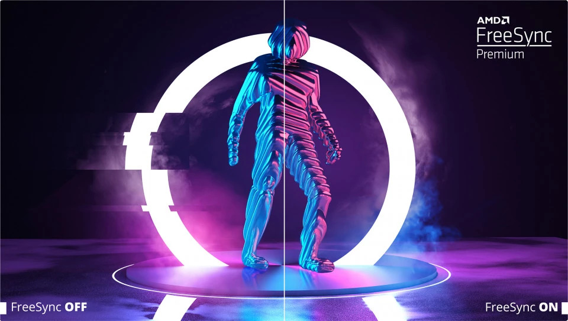
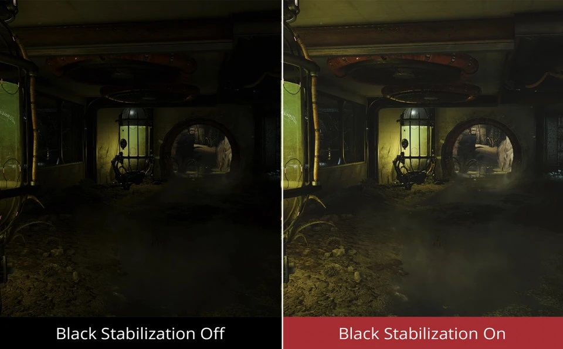
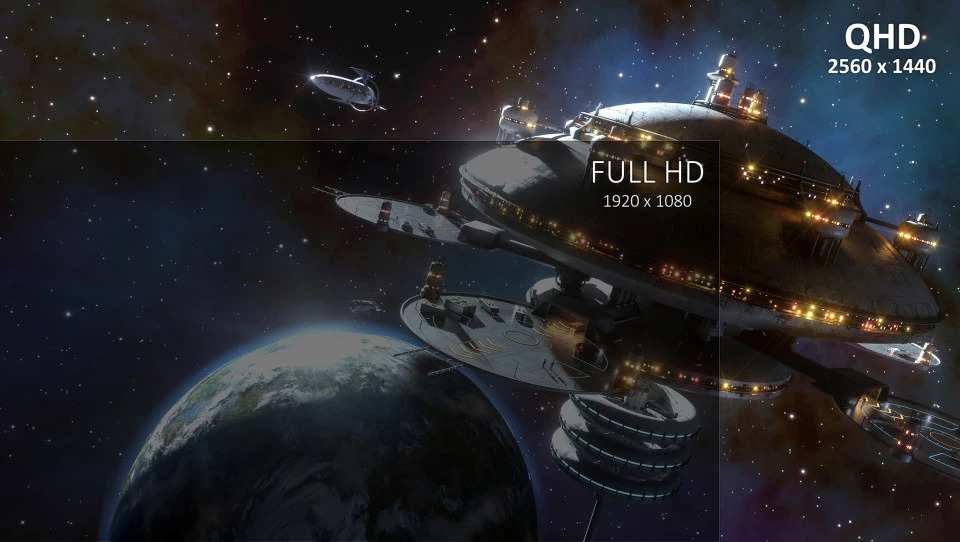
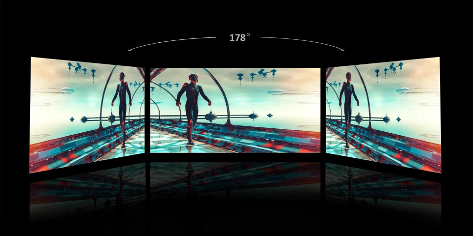

Монитор ViewSonic VX2718-2KPC-MHD с изогнутым экраном и частотой обновления 165 Гц предоставляет захватывающее мультимедийное восприятие. Экран с радиусом изгиба 1500R обеспечивает полное погружение в виртуальній мир. Частота обновления 165 Гц гарантирует плавную анимацию и минимальную задержку ввода, а технология AMD FreeSync™ Premium обеспечивает плавный геймплей, исключая разрывы и рывки изображения. Время отклика MPRT 1 мс гарантирует высокое качество изображения и скорость отображения. Модель VX2718-2KPC-MHD также включает в себя предустановки ViewMode™ от ViewSonic, оптимизирующие производительность монитора для различных приложений, просмотра фильмов, редактирования и гейминга. Дополнительно, интерфейс DisplayPort и два интерфейса HDMI предоставляют гибкие возможности подключения как для повседневного использования, так и для развлечений.
Изогнутый экран с изгибом 1500R на мониторе VX2718-2KPC-MHD создает захватывающее ощущение присутствия, позволяя наслаждаться четкими панорамными изображениями.
Частота обновления 165 Гц обеспечивает плавное отображение и великолепную графику, независимо от динамики игрового процесса.
Время отклика 1 мс (MPRT) обеспечивает высокую производительность благодаря плавному переключению пикселей и минимизации цветовых ореолов.
Технология AMD FreeSync™ позволяет монитору автоматически адаптироваться к графике, предотвращая разрывы изображения.
Функция стабилизации черного цвета от ViewSonic позволяет видеть детали в темных сценах, улучшая видимость в условиях ограниченной освещенности.
Разрешение QHD обеспечивает более четкое изображение по сравнению с традиционным Full HD, сохраняя стандартное соотношение сторон 16:9.
Оригинальный режим ViewMode™ от ViewSonic предоставляет специальные предустановки для разных сценариев, включая режимы Game, Movie, Web, Text, Mac и Mono. Эти предустановки оптимизируют цветовую гамму, контраст и яркость для наилучшего просмотра.
